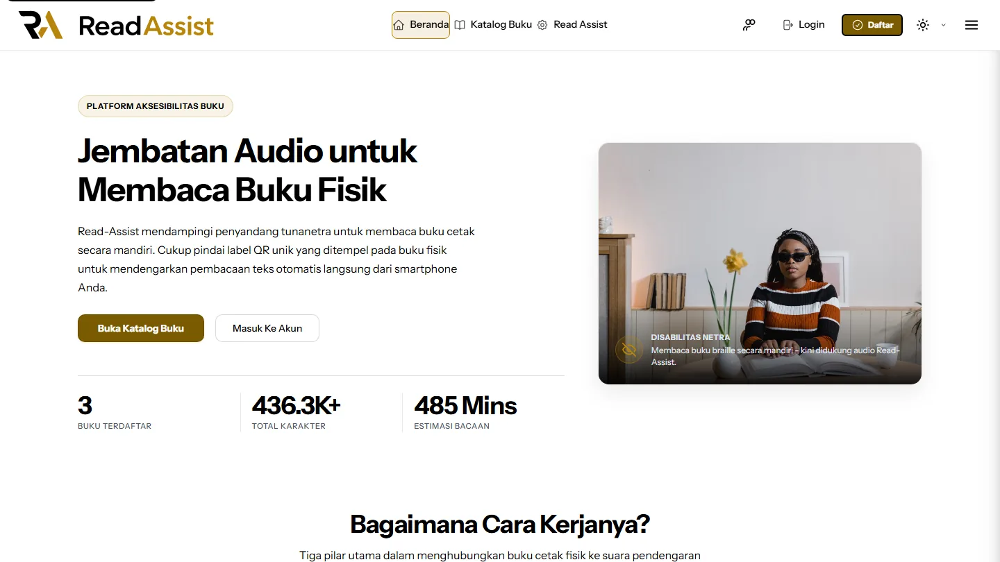
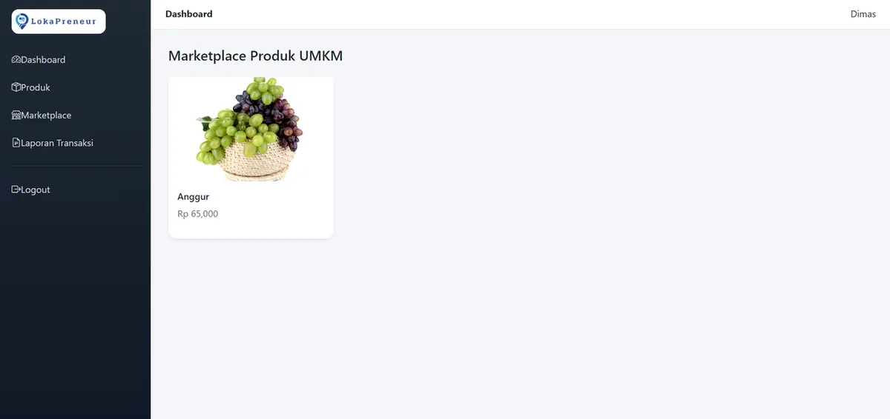
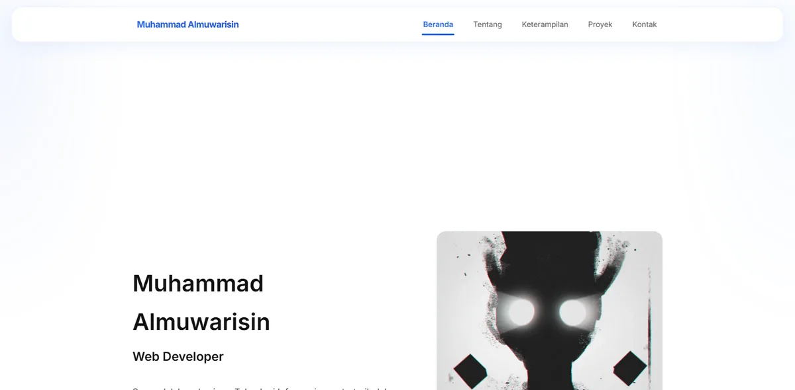
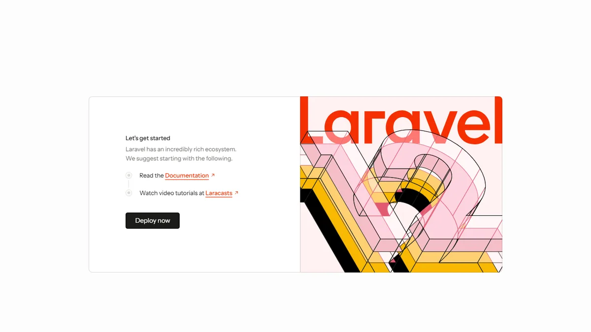

Muhammad Almuwarisin
Web Developer dan Information Technology Student
Laravel · PHP · JavaScript · Web Accessibility
Mengembangkan aplikasi web yang accessible menggunakan Laravel dan teknologi web modern.
Tentang
Muhammad Almuwarisin
Mahasiswa Teknologi Informasi di UIN Ar-Raniry Banda Aceh
Saya membangun aplikasi web menggunakan Laravel dan PHP dengan perhatian pada aksesibilitas dan pengalaman pengguna.
Beberapa proyek saya menerapkan dukungan screen reader, navigasi keyboard, dan antarmuka yang lebih mudah diakses.
Fokus Saya
- Web Development
- Laravel & PHP
- Web Accessibility
- UI/UX
Teknologi Utama
- Laravel
- PHP
- JavaScript
- HTML
- CSS
- Blade
- SQLite
Proyek Relevan
UIN Ar-Raniry Banda Aceh
Program Studi Teknologi Informasi
Keterampilan
Frontend
Membangun antarmuka web yang responsif, terstruktur, dan interaktif.
Backend
Mengembangkan aplikasi web menggunakan PHP dan Laravel.
Tools
Version control, pengelolaan repository, dan perancangan antarmuka.
Proyek

LokaPreneur
Aplikasi web berbasis Laravel untuk manajemen produk, transaksi, dan laporan pada usaha skala kecil dan lokal.
Laravel
Blade
PHP
JavaScript


Portal Berita
Aplikasi web berbasis Laravel untuk menampilkan dan mengelola konten artikel secara terstruktur dengan arsitektur MVC.
Laravel
Blade
PHP
JavaScript
Kontak
Terhubung dengan saya melalui:
Email
muwarisin@gmail.com
GitHub
github.com/Ayries18
LinkedIn
linkedin.com/in/muhammad-almuwarisin-934079376
Saya terbuka untuk berdiskusi mengenai pengembangan web, teknologi, dan proyek yang berkaitan dengan aksesibilitas.